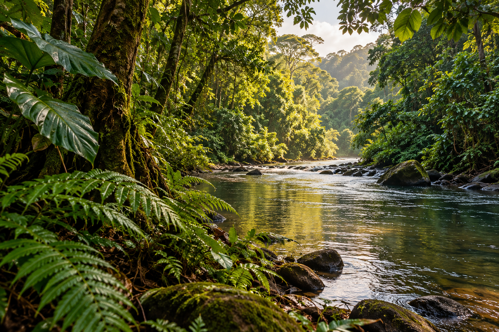

ÉLŐVILÁG
A lombkorona lakói
Találkozz a trópusi erdők színpompás madaraival és rejtőzködő lakóival.
Tovább olvasomA FÖLD ZÖLD TÜDEJE
Ismerd meg a sűrű lombkoronák, különleges állatok és rejtett folyók lenyűgöző világát. Fedezd fel, miért olyan fontosak ezek az élőhelyek mindannyiunk számára.
Fedezd felLÉPJ KÖZELEBB A TERMÉSZETHEZ
Az esőerdő apró részletei egy hatalmas, közös történetet mesélnek el.
ÉLŐVILÁG
Találkozz a trópusi erdők színpompás madaraival és rejtőzködő lakóival.
Tovább olvasomÉRDEKESSÉGEK
Ismerd meg azokat az apró élőlényeket, amelyek nélkül más lenne az erdő.
Tovább olvasom
FELFEDEZÉS
Barangolj képzeletben a zöld partok és a sűrű erdők mélyére.
Tovább olvasom